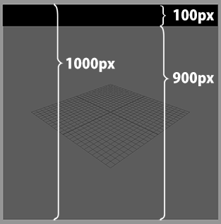

Letterbox¶
Contents of this page:
Overview¶
Letterboxes can be displayed on the top, bottom, left, and right
The standard for displaying the borders is ResolutionGate.

The thickness of the letterbox is calculated based on the resolution value in RenderSettings
For example, to display a letterbox in the top 10% of a ResolutionGate of 1000px height, set the Top attribute to
100(px)
See also
See “How to set up Letterbox” for concrete examples of how to use it.
Attributes¶

Right (px)¶
Specify the width of the letterbox to be displayed on the right side
Bottom (px)¶
Specify the height of the letterbox to be displayed at the bottom.